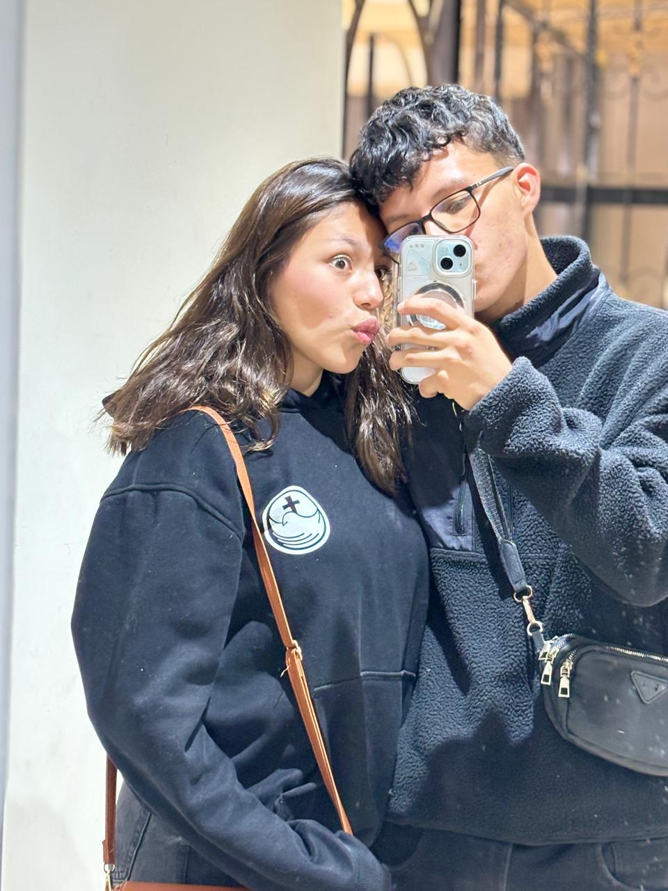
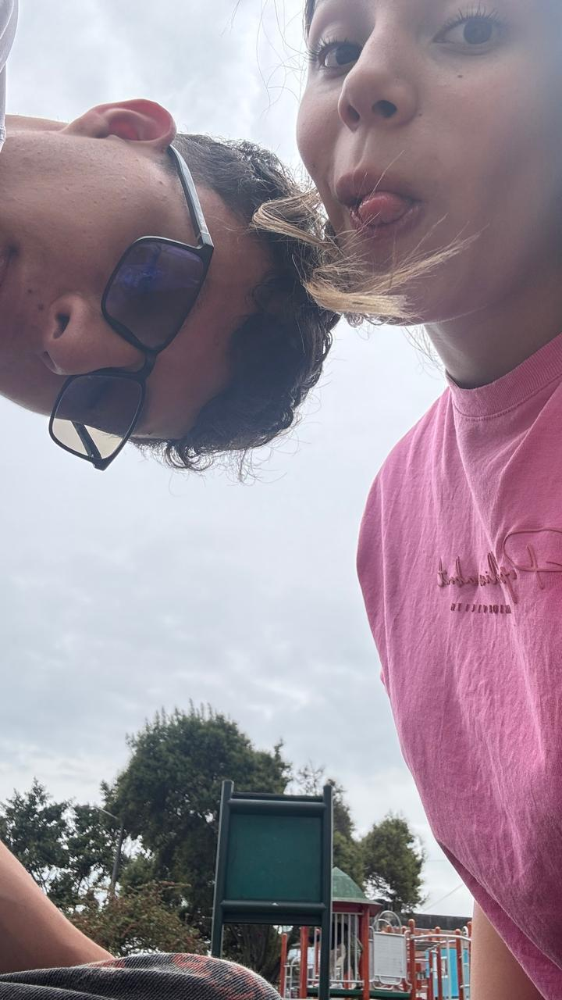
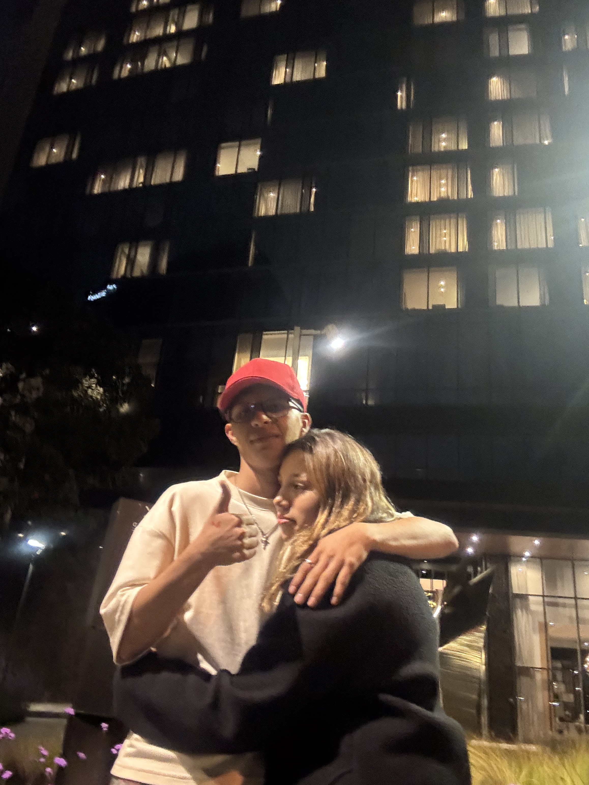
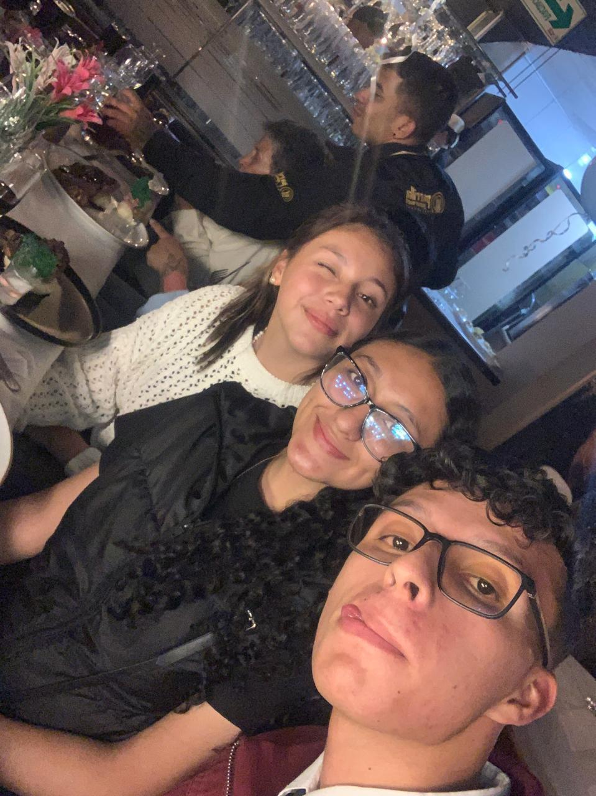
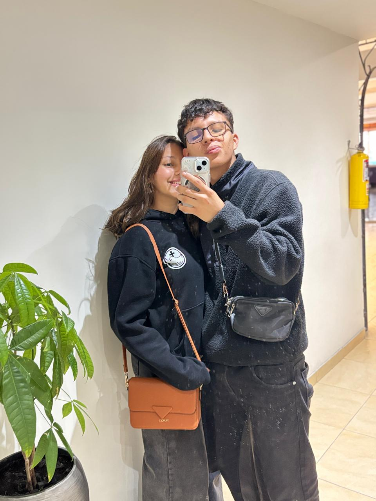
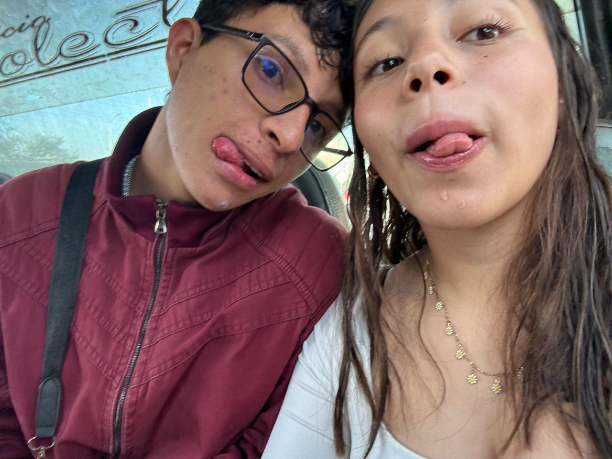

Capturada en instantes fugaces
"Nuestra historia comenzó con una oración y sigue escribiéndose con amor."

Hay un arte en la forma en que ocupas un espacio. Una calidad cinematográfica silenciosa en tus gestos más simples. Este lugar es un archivo vivo — un tesoro digital que guarda la belleza tranquila de tu presencia, Isabella.
Cada imagen aquí es una carta de amor intencional. Una preservación cuidadosa de luz, de momentos, y de Tiburoncin.
23 de septiembre de 2025
de amistad con propósito y amor
Arrastra para explorar

02
Mi lugar favorito siempre será a tu lado.

03
Dios fue bueno conmigo cuando te puso en mi camino.

04
Contigo, todo tiene más sentido.

05
Mi tiburoncín favorita. 🦈💖

06
Eres una de mis oraciones respondidas.
En todo el mundo, no hay corazón para mí como el tuyo. En todo el mundo, no hay amor para ti como el mío.
— Maya Angelou, para TiburoncinGracias por decir sí a esta historia.
Te amo, tiburoncín.
— Tu niño ❤️